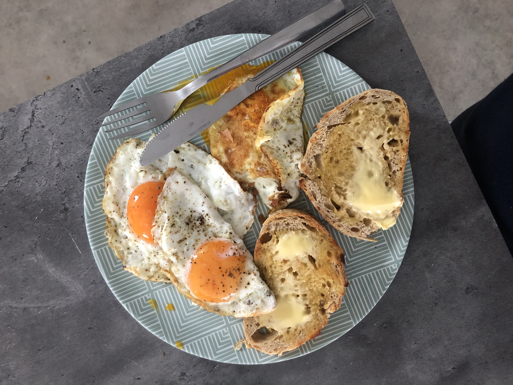

Description
Easiest nutrient dense breakfast
Ingrediants
Servings: 1
- Eggs 2-4
- Bread 1-2
- Butter
Steps for Fried Eggs:
- Heat a pan on medium heat and add oil or butter to the pan
- Once pan is hot, crack eggs into pan
- Cook until the eggs whites have turned white
- You can put a lid on the pan to cook the top through steam or flip the eggs for a couple of seconds
- Put toast on to desired time
- Take eggs off once you're happy with it
- Butter toast and finieto
Steps for Boiled Eggs:
- Pour boiling water into a pot and bring it back to boiling
- Add the Eggs to the boiling water
- Wait for 6-7 minutes
- Take pot off the hob & run it under called water
- Put toast on to desired time
- Peel eggs in the meantime
- Butter toast and finieto